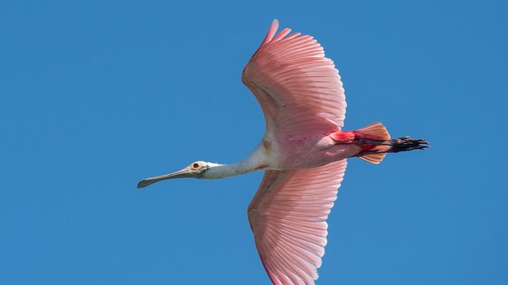

物理5–11 岁约 10 分钟
弯喙探泥才够得到，直喙乱啄就够不着？
同一只纸鹮。喙往下弯、探进泥，才够得到深处的虫；喙变直去啄，就啄空了。虫藏在泥的深处，泥里看不见；长喙顺着弯伸进泥里，喙尖碰到才夹得住；直着去啄，只碰到表层，深处的就漏掉。本页不追滩涂里的鸟，观察后洗手。
同一只纸鹮，弯探一回，直啄一回


弯喙探泥才够得到。直喙乱啄就够不着。先点「弯探」，再点「试一试」。
先猜一猜，再试
第 1 题：弯 80，下弯长喙探进泥，够得到吗？
押一个。把弯调到 80，再点试一试。
第 2 题：弯 10，直喙乱啄，还够得到吗？
押好后弯 10，再试一试。
第 3 题：弯 50，刚好一半，算够到吗？
押好后弯 50，再试一试。
同一只纸鹮：弯喙探泥才够得到；直喙乱啄就够不着
先点「弯探」再点「试一试」，看长喙伸进泥、深虫被摸到。再点「直啄」试一次，看是不是只啄到表层、深处的漏掉。
纸鹮始终是同一只。要紧的是弯不弯：喙又长又往下弯，才伸得进泥的深处，泥里看不见，靠喙尖碰到虫再夹住；直着去啄，只碰到表层，深处的就漏掉。琵鹭扁嘴左右扫、反嘴鹬上弯扫——都另开，不比。
舞台上的「够到」是本页比较尺子：弯 ≥ 80 才算探进泥。刚好 50 还不够。不追滩涂里的鸟，观察后洗手。本页用纸板。
弯喙图鉴
点一张，对照舞台：谁让弯喙探泥才够得到，谁让直喙乱啄就够不着。
点一张图鉴，对照为什么弯喙探泥才够得到。
猜一猜
同一只纸鹮要够到深处的虫，靠的是弯探，还是直啄？
先押一个，再点「看答案」。
任务：弯探和直啄都试
先把弯调到 80 或更高试一次，再调到 20 或更低试一次。两头都点过「试一试」即可完成。
开放式提示不会代替上面的正式任务。
尚未完成：先弯探试一次，或直啄试一次。
同一只纸鹮，先弯探试一次，再直啄试一次
舞台上只改一件事：弯探得有多够。同一只纸鹮、同一片泥滩，先弯探试一次，看够不够得到；再直啄试一次，看是不是啄空。这样比，才知道够到靠的是弯探，不是「越直越准」，也不是「左右扫」或「上弯扫」。
回家只带两句：「弯喙探泥才够得到」；「直喙乱啄就够不着」。不要写成「越直越好啄」。
喙尖伸进深泥，碰到虫才夹得住。
直喙乱啄以后只碰到表层，深处的漏掉。
琵鹭左右扫另开；本页比弯不弯，两句不要并成一句。
不追涉禽、不跟着下滩，本页用纸板对照。
这在教什么：孩子要能对弯探和直啄各报够到或啄空，并否定「琵鹭那种左右扫」和「反嘴鹬那种上弯扫」。
- 弯探那一次，长喙伸进泥了吗？深虫够到了吗？
- 直啄，台上还够得到吗？
- 本页要比左右扫或上弯扫吗？
- 能去追滩涂里的真鹮吗？
够到靠弯喙探泥，不是左右扫，更不要去追真的
虫藏在泥的深处，泥里看不见；白鹮把又长又往下弯的喙顺着弯伸进泥里，喙尖碰到虫再夹住，才够得到；直着去啄，只碰到表层，深处的就漏掉。
不要把它讲成「越直越好啄」或「变成琵鹭就能扫到」。琵鹭扁嘴左右扫、反嘴鹬细嘴上弯扫，都是另外的账；白鹮先比喙弯不弯。
不追活鸟，不跟着下滩。看完按二十秒洗手。本页用纸板。
给家长的问题
- 弯探那一次，孩子指的是弯喙和泥层，还是在说「它比较厉害」？让他再指一次下弯的喙端。
- 直啄，为什么够不着？哪一句四岁听得懂？
- 如果他说「左右扫就能够到」——左右扫是哪一笔账？本页少的是下弯还是扁勺？
- 反嘴鹬上弯扫和白鹮下弯探，差在「往上弯去扫」还是「往下弯去探」？
- 不追涉禽、不跟着下滩、看完洗手：红线怎么说？本页能当下滩课吗？
背后的原理
舞台上不写这些词，留给孩子用眼睛看。白鹮喙又长又往下弯，探进泥才摸到深处的猎物。本页用弯 ≥ 80 当门槛，≤ 20 算直喙乱啄。刚好 50 不够到。
这不是琵鹭左右扫说明书，也不是反嘴鹬上弯扫。左右扫另开，上弯扫另开，都不要并进本页第一完成句。
人去追活鹮会让它弃滩。观察后洗手。舞台用纸板。
接下来可以去
带走句：弯喙探泥才够得到；直喙乱啄就够不着。鹮观察站看真下弯探；琵鹭页对照左右扫，反嘴鹬页对照上弯扫。